| # | Compound | Structure | MIC90 (μM) | Remark | SMILES |
|---|---|---|---|---|---|
| 1 | Avarofloxacin | 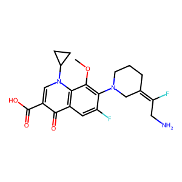 |
50 | O=C(C1=CN(C2CC2)C3=C(C=C(F)C(N4C/C(CCC4)=C(F)\CN)=C3OC)C1=O)O | |
| 2 | Balofloxacin | 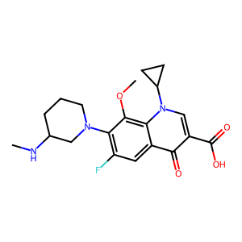 |
16 | CNC1CCCN(C1)C2=C(C=C3C(=C2OC)N(C=C(C3=O)C(=O)O)C4CC4)F | |
| 3 | Besifloxacin Hydrochloride | 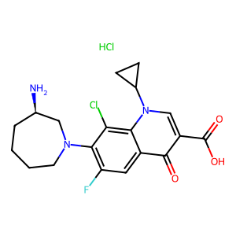 |
>16 | C1CCN(C[C@@H](C1)N)C2=C(C=C3C(=C2Cl)N(C=C(C3=O)C(=O)O)C4CC4)F.Cl | |
| 4 | Cadrofloxacin | 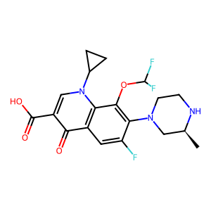 |
3 | O=C(O)C1=CN(C2=C(C1=O)C=C(C(N3C[C@@H](NCC3)C)=C2OC(F)F)F)C4CC4 | |
| 5 | Cinoxacin | 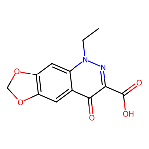 |
>16 | CCN1C2=CC3=C(C=C2C(=O)C(=N1)C(=O)O)OCO3 | |
| 6 | Clinafloxacin | 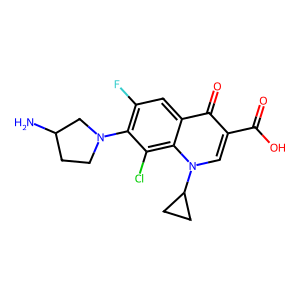 |
4 | insoluble at 5 mM (DMSO) | C1CC1N2C=C(C(=O)C3=CC(=C(C(=C32)Cl)N4CCC(C4)N)F)C(=O)O |
| 7 | Danofloxacin (mesylate) | 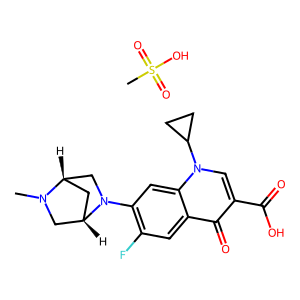 |
48 | CN1C[C@@H]2C[C@H]1CN2C3=C(C=C4C(=C3)N(C=C(C4=O)C(=O)O)C5CC5)F.CS(=O)(=O)O | |
| 8 | DC-159a | 1 | - | ||
| 9 | Delafloxacin | 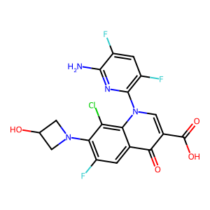 |
12 | C1C(CN1C2=C(C=C3C(=C2Cl)N(C=C(C3=O)C(=O)O)C4=C(C=C(C(=N4)N)F)F)F)O | |
| 10 | Enoxacin (hydrate) | 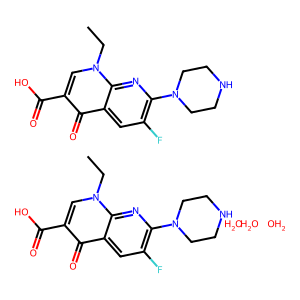 |
52 | O.O.O.CCn1cc(C(O)=O)c(=O)c2cc(F)c(nc12)N1CCNCC1.CCn1cc(C(O)=O)c(=O)c2cc(F)c(nc12)N1CCNCC1 | |
| 11 | Enrofloxacin | 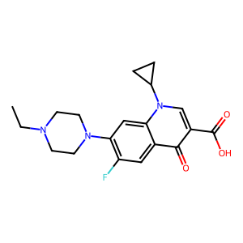 |
23 | CCN1CCN(CC1)C2=C(C=C3C(=C2)N(C=C(C3=O)C(=O)O)C4CC4)F | |
| 12 | Finafloxacin | 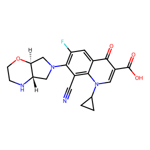 |
42 | C1CC1N2C=C(C(=O)C3=CC(=C(C(=C32)C#N)N4C[C@H]5[C@H](C4)OCCN5)F)C(=O)O | |
| 13 | Fleroxacin | 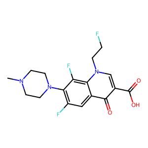 |
>128 | CN1CCN(CC1)C2=C(C=C3C(=C2F)N(C=C(C3=O)C(=O)O)CCF)F | |
| 14 | Flumequine | 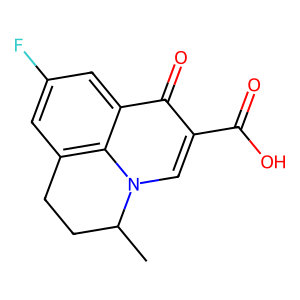 |
>16 | CC1CCC2=C3N1C=C(C(=O)C3=CC(=C2)F)C(=O)O | |
| 15 | Garenoxacin (Mesylate hydrate) | 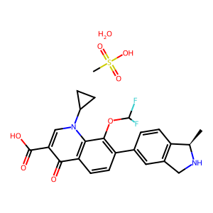 |
128 | O=C(O)C1=CN(C2=C(C1=O)C=CC(C3=CC4=C(C=C3)[C@H](NC4)C)=C2OC(F)F)C5CC5.CS(=O)(O)=O.O | |
| 16 | Gemifloxacin mesylate | 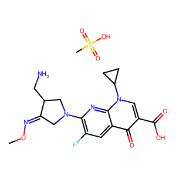 |
106 | CO/N=C/1\CN(CC1CN)C2=C(C=C3C(=O)C(=CN(C3=N2)C4CC4)C(=O)O)F.CS(=O)(=O)O | |
| 17 | Gepotidacin | 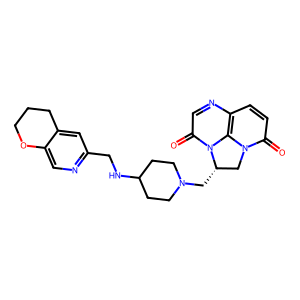 |
32 | C1CC2=CC(=NC=C2OC1)CNC3CCN(CC3)C[C@H]4CN5C(=O)C=CC6=C5N4C(=O)C=N6 | |
| 18 | (R) Gyramide Hydrocholoride | 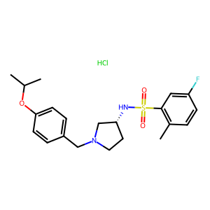 |
- | CC1=C(C=C(C=C1)F)S(=O)(=O)N[C@@H]2CCN(C2)CC3=CC=C(C=C3)OC(C)C.Cl | |
| 19 | Levofloxacin | 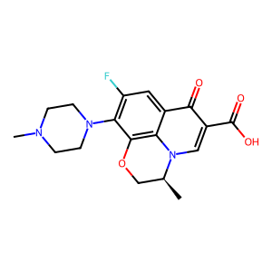 |
10 | C[C@H]1COC2=C3N1C=C(C(=O)C3=CC(=C2N4CCN(CC4)C)F)C(=O)O | |
| 20 | Lomefloxacin HCl | 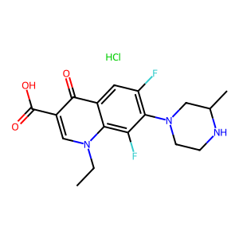 |
>64 | CCN1C=C(C(=O)C2=CC(=C(C(=C21)F)N3CCNC(C3)C)F)C(=O)O.Cl | |
| 21 | Marbofloxacin | 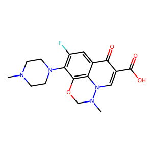 |
8 | CN1CCN(CC1)C2=C(C=C3C4=C2OCN(N4C=C(C3=O)C(=O)O)C)F | |
| 22 | Merafloxacin | 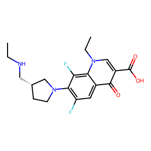 |
>16 | insoluble at 5 mM (DMSO) | CCNC[C@H]1CCN(C1)C2=C(C=C3C(=C2F)N(C=C(C3=O)C(=O)O)CC)F |
| 23 | Moxifloxacin Hydrochloride | 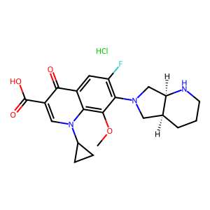 |
4 | COC1=C2C(=CC(=C1N3C[C@@H]4CCCN[C@@H]4C3)F)C(=O)C(=CN2C5CC5)C(=O)O.Cl | |
| 24 | Nadifloxacin | 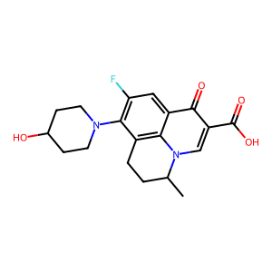 |
128 | CC1CCC2=C3N1C=C(C(=O)C3=CC(=C2N4CCC(CC4)O)F)C(=O)O | |
| 25 | Nalidixic acid | 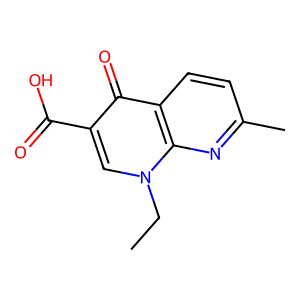 |
>16 | CCN1C=C(C(=O)C2=C1N=C(C=C2)C)C(=O)O | |
| 26 | Norfloxacin | 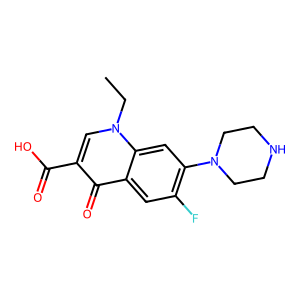 |
128 | CCN1C=C(C(=O)C2=CC(=C(C=C21)N3CCNCC3)F)C(=O)O | |
| 27 | Ofloxacin | 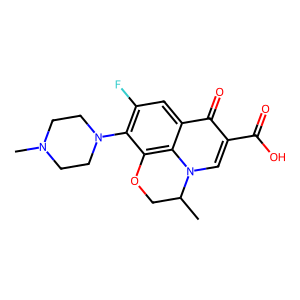 |
>16 | dissolved in water | CC1COC2=C3N1C=C(C(=O)C3=CC(=C2N4CCN(CC4)C)F)C(=O)O |
| 28 | Orbifloxacin | 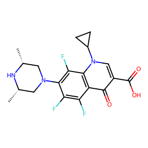 |
16 | C[C@@H]1CN(C[C@@H](N1)C)C2=C(C3=C(C(=C2F)F)C(=O)C(=CN3C4CC4)C(=O)O)F | |
| 29 | Oxolinic acid | 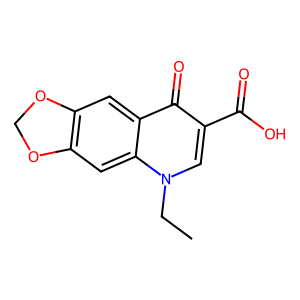 |
>16 | CCN1C=C(C(=O)C2=CC3=C(C=C21)OCO3)C(=O)O | |
| 30 | Pazufloxacin (mesylate) | 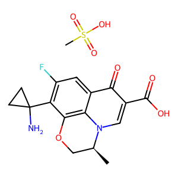 |
>48 | C[C@H]1COC2=C3N1C=C(C(=O)C3=CC(=C2C4(CC4)N)F)C(=O)O.CS(=O)(=O)O | |
| 31 | Pefloxacin | 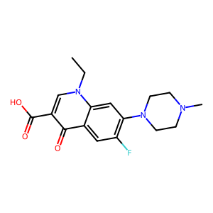 |
>64 | CCN1C=C(C(=O)C2=CC(=C(C=C21)N3CCN(CC3)C)F)C(=O)O | |
| 32 | Pipemidic acid | 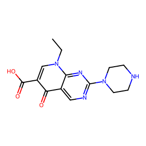 |
>16 | CCN1C=C(C(=O)C2=CN=C(N=C21)N3CCNCC3)C(=O)O | |
| 33 | Prulifloxacin | 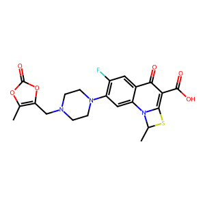 |
50 | CC1N2C3=CC(=C(C=C3C(=O)C(=C2S1)C(=O)O)F)N4CCN(CC4)CC5=C(OC(=O)O5)C | |
| 34 | Quarfloxin | 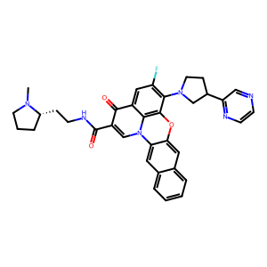 |
>16 | insoluble at 5 mM (DMSO) | CN1CCC[C@H]1CCNC(=O)C2=CN3C4=CC5=CC=CC=C5C=C4OC6=C3C(=CC(=C6N7CCC(C7)C8=NC=CN=C8)F)C2=O |
| 35 | Rosoxacin | 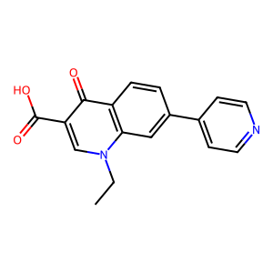 |
>16 | CCN1C=C(C(=O)C2=C1C=C(C=C2)C3=CC=NC=C3)C(=O)O | |
| 36 | Rufloxacin hydrochloride | 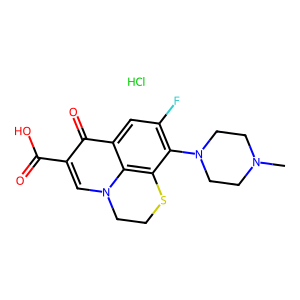 |
140 | Cl.CN1CCN(CC1)C1=C(F)C=C2C(=O)C(=CN3CCSC1=C23)C(O)=O | |
| 37 | Sitafloxacin (hydrate) | 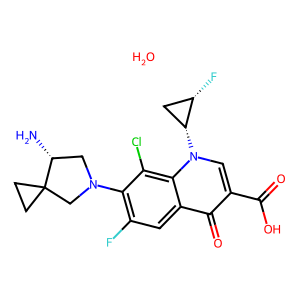 |
0.4 | C1CC12CN(C[C@H]2N)C3=C(C=C4C(=C3Cl)N(C=C(C4=O)C(=O)O)[C@@H]5C[C@@H]5F)F.O | |
| 38 | Sparfloxacin | 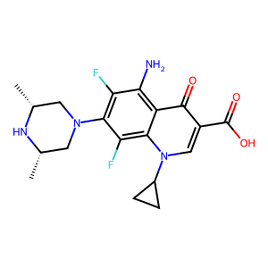 |
8 | C[C@@H]1CN(C[C@@H](N1)C)C2=C(C(=C3C(=C2F)N(C=C(C3=O)C(=O)O)C4CC4)N)F | |
| 39 | Temafloxacin | 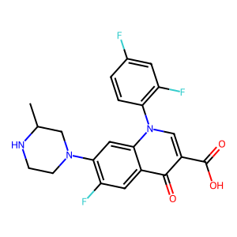 |
>16 | insoluble at 5 mM (DMSO) | CC1CN(CCN1)C2=C(C=C3C(=C2)N(C=C(C3=O)C(=O)O)C4=C(C=C(C=C4)F)F)F |
| 40 | Tosufloxacin (tosylate hydrate) | 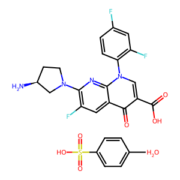 |
>48 | CC1=CC=C(S(=O)(O)=O)C=C1.N[C@@H]2CN(C3=C(F)C=C4C(C(C(O)=O)=CN(C5=C(F)C=C(F)C=C5)C4=N3)=O)CC2.O | |
| 41 | Trovafloxacin (mesylate) | 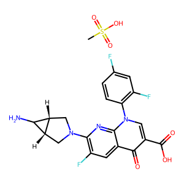 |
>48 | CS(=O)(=O)O.C1[C@@H]2[C@@H](C2N)CN1C3=C(C=C4C(=O)C(=CN(C4=N3)C5=C(C=C(C=C5)F)F)C(=O)O)F | |
| 42 | Zoliflodacin | 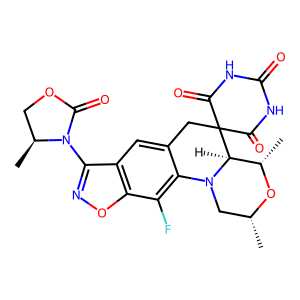 |
128 | C[C@@H]1CN2[C@H]([C@@H](O1)C)C3(CC4=CC5=C(C(=C42)F)ON=C5N6[C@H](COC6=O)C)C(=O)NC(=O)NC3=O |